테이블형
GRID · 같은 항목을 여러 건 기록하는 표
테이블형 필드란
- 1.1필드 추가와 속성 패널 구성
1.1필드 추가와 속성 패널 구성
개요
테이블형(GRID) 은 같은 항목을 여러 건 기록하는 표입니다. 병용약물처럼 몇 건이 될지 미리 알 수 없는 자료에 사용합니다. 다른 타입과 가장 크게 다른 점은 저작 순서입니다 — 먼저 표의 컬럼(열)을 정의하고3장, 행은 기록자가 입력 화면에서 직접 추가합니다. 컬럼을 정의하기 전까지 이 필드는 아무것도 받을 수 없습니다.
화면 설명
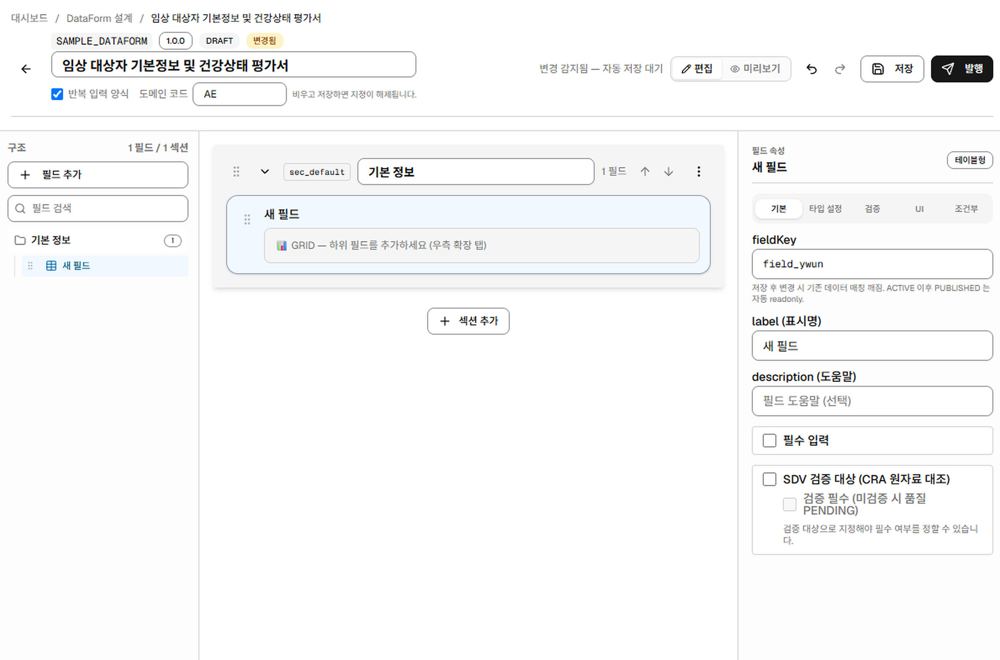
[+ 필드 추가] — 여기에서 타입을 지정하면 필드가 생성됩니다.
구조 트리에 새 필드가 추가됩니다. 아이콘이 표 모양입니다.
WYSIWYG 캔버스에는 표 대신 안내만 표시됩니다 — “GRID — 하위 필드를 추가하세요 (우측 확장 탭)”. 컬럼이 0개이기 때문입니다. 3.1
fieldKey — 표 전체가 저장되는 키입니다. 컬럼마다 따로 생기는 것이 아니라 표 하나에 키 하나입니다. 2.1
label (표시명) · description (도움말) — 표 위아래에 표시되는 이름과 보조 설명입니다. 2.1
필수 입력 — 2.2 에서 다룹니다. ⚠ 컬럼의 필수와는 다른 축입니다.
SDV 검증 대상 — 2.3 에서 다룹니다.
타입 배지 「테이블형」 — 선택한 필드의 타입입니다. 추가한 뒤에는 변경할 수 없습니다.
속성 탭 5종 — 기본 · 타입 설정 · 검증 · UI · 조건부. 이 매뉴얼 2~6장이 각 탭에 대응합니다.
SDV 아래가 비어 있습니다. 다른 타입에 있는 AE 의미 역할과 미측정 선언 허용이 테이블형에는 항목 자체가 표시되지 않습니다 — 표는 값이 여러 건이라 그 두 기능이 성립하지 않기 때문입니다. 7.2
유의사항
필수 확인 데이터 손상 · 폼 완료 불가
- • ⛔ 컬럼을 정의하지 않으면 이 필드는 아무 쓸모가 없습니다. 캔버스에 표가 보이지 않는 것이 그 상태입니다 — 반드시 타입 설정 탭에서 컬럼을 먼저 만드십시오. 3장
- • 타입은 추가한 뒤에 변경할 수 없고, 발행(PUBLISH) 이후에는 구조 자체를 변경할 수 없습니다. 잘못 선택했다면 필드를 삭제하고 다시 추가하십시오.
오해하기 쉬운 동작
- • 행 수는 저작자가 정하지 않습니다. 기록자가 입력 화면에서 [행 추가] 로 필요한 만큼 늘립니다. 최소·최대 행 수를 지정하는 항목은 제공되지 않습니다. 7.2
- • 표 안에 또 표를 넣을 수 없습니다. 컬럼으로 쓸 수 있는 타입은 한 칸에 들어가는 9종뿐입니다. 3.2
기본 탭 — 이름 · 필수 · 검증 대상
- 2.1fieldKey · 표시명 · 도움말
- 2.2필수 입력
- 2.3SDV 검증 대상 (CRA 원자료 대조)
2.1fieldKey · 표시명 · 도움말
개요
필드의 이름을 정하는 영역입니다. 저장 키(fieldKey)와 화면에 표시되는 이름(label)은 서로 다른 값이며, 변경해도 되는 시점이 다릅니다. 표에는 무엇을 몇 건이든 적는 칸인지가 드러나야 하므로 표시명을 구체적으로 적으십시오.
화면 설명
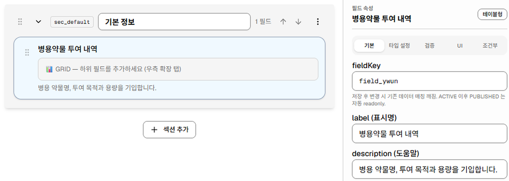
label (표시명) — 표 위에 표시할 제목을 입력합니다. 캡처는 병용약물 투여 내역 입니다.
캔버스 표 제목으로 표시됩니다. 컬럼 이름과는 다른 층입니다 — 컬럼 이름은 타입 설정 탭에서 따로 정합니다. 3.3
description (도움말) — 표 아래에 표시할 보조 설명을 입력합니다. 공란으로 두면 표시되지 않습니다.
표 아래 회색 글씨로 표시됩니다. 캡처는 “병용 약물명, 투여 목적과 용량을 기입합니다.” 입니다.
fieldKey — 표 전체가 저장되는 키입니다. 필드를 추가하면 field_ywun 처럼 자동으로 부여되며, 화면 안내와 같이 “저장 후 변경 시 기존 데이터 매칭 깨짐” 입니다.
유의사항
필수 확인 데이터 손상 · 폼 완료 불가
- • 무엇을 모으는 표인지 표시명에 밝히십시오. 「투여 내역」 만으로는 시험약인지 병용약물인지 알 수 없어, 같은 표에 성격이 다른 기록이 섞입니다.
- • 한 건도 없을 때 어떻게 하는지 도움말에 적으십시오. 표는 “없음” 을 표시할 칸이 따로 없습니다 — 빈 표와 아직 안 물어본 표가 같아 보입니다. 「해당 없음」 컬럼을 두거나 앞에 예/아니오 질문을 두는 식으로 저작자가 설계해야 합니다. 6장
- • fieldKey 는 저장한 뒤에 변경하지 마십시오. 이미 입력된 데이터와의 연결이 끊어지고, 이 필드를 참조하던 검증 규칙4.3과 조건부 표시6장도 함께 깨집니다.
오해하기 쉬운 동작
- • 표시명(label)은 언제든 변경할 수 있습니다. 저장된 값에는 영향을 주지 않습니다.
2.2필수 입력
개요
이 표를 반드시 채워야 폼을 완료할 수 있게 할지 정합니다. 테이블형에는 필수가 두 층으로 존재합니다 — 여기의 표 전체 필수와, 타입 설정 탭의 컬럼별 필수3.3입니다. 둘은 각각 따로 효력이 있고, 컬럼 쪽이 더 강하게 작동합니다.
화면 설명
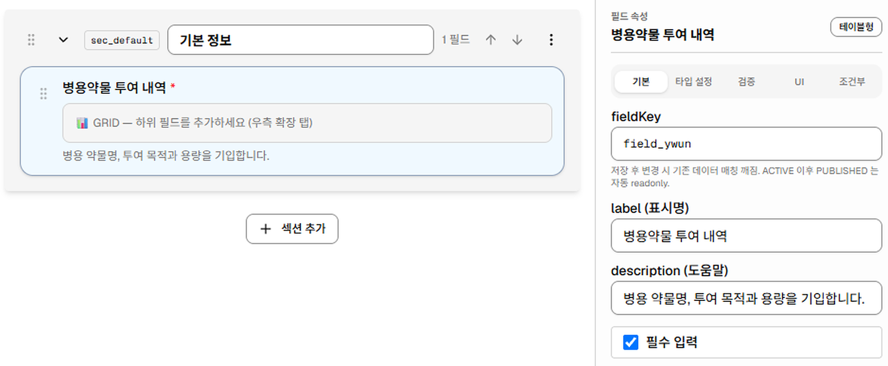
* 가 표시된다필수 입력 — 선택하면 이 표가 필수 항목이 됩니다. 행이 한 건도 없으면 폼을 완료할 수 없습니다.
캔버스 표 제목 오른쪽에 빨간 * 가 표시됩니다. 표시는 제목 옆에 하나만 붙습니다 — 컬럼마다 붙는 별은 3.3 에서 따로 정합니다.
label · description — 2.1 에서 입력한 값이 그대로 표시됩니다.
유의사항
필수 확인 데이터 손상 · 폼 완료 불가
- • ⛔ 컬럼에 필수가 하나라도 있으면 이 체크를 끄더라도 표를 채워야 합니다. 시스템은 필수 컬럼을 가진 표를 자동으로 완료 집계 대상에 넣습니다 — 표 전체 필수를 해제했다고 건너뛸 수 있게 되지 않습니다. 3.3
- • ⛔ 행을 추가해 놓고 비워 두면 완료되지 않습니다. 시스템은 행마다 필수 컬럼이 채워졌는지까지 확인합니다. 빈 행 하나가 남아 있으면 그 표는 미완료입니다 — 쓰지 않을 행은 삭제하십시오. 3.3
- • “해당 없음” 을 표현할 수단이 없습니다. 미측정 선언을 켤 수 없는 타입이므로 필수로 지정하기 전에 병용약물이 없는 피험자를 어떻게 기록할지 먼저 정하십시오. 보통 앞에 예/아니오 질문을 두고 조건부 표시로 묶습니다. 6장 · 7.2
오해하기 쉬운 동작
- • 숨겨진 필드는 필수 검사에서 제외됩니다. 조건부 표시6장로 감춰진 동안에는 필수여도 비어 있는 상태로 폼이 완료됩니다.
2.3SDV 검증 대상 (CRA 원자료 대조)
개요
SDV(Source Data Verification) 는 임상연구모니터요원(CRA)이 입력값을 의료기관 원자료와 대조하는 절차입니다. 이 필드를 그 대상으로 지정할지 여기에서 정합니다. 이 설정은 모든 필드 타입에서 동일하므로 화면도 타입과 무관하게 같습니다.
화면 설명


SDV 검증 대상 (CRA 원자료 대조) — 선택하면 이 필드가 CRA 의 대조 목록에 포함됩니다. 지정 단위는 표 전체이며 컬럼별로 따로 지정할 수 없습니다.
선택 상태로 바뀌면서 하위 항목이 활성화됩니다.
검증 필수 (미검증 시 품질 PENDING) — ①을 선택한 뒤에야 지정할 수 있습니다. 선택하면 CRA 가 대조를 마치기 전까지 해당 데이터의 품질 상태가 PENDING 에 머무릅니다.
①을 선택하기 전에는 ②가 흐리게 비활성입니다. 화면 안내와 같이 “검증 대상으로 지정해야 필수 여부를 정할 수 있습니다.”
유의사항
필수 확인 데이터 손상 · 폼 완료 불가
- • ⛔ 표에서 가장 중요한 대조 항목은 “빠진 행” 입니다. 적혀 있는 행이 맞는지보다 원자료에 있는데 표에 없는 투여 기록이 더 위험합니다 — 시스템은 빠진 행을 알 방법이 없으므로 전적으로 CRA 의 대조에 의존합니다.
- • ⛔ 행이 늘어날수록 대조 부담이 커집니다. 컬럼을 과하게 늘리기 전에 정말 대조할 수 있는 항목인지 확인하십시오. 3.3
오해하기 쉬운 동작
- • 값이 변경되면 검증이 해제됩니다. 행 하나의 셀 하나만 고쳐도 표 전체의 품질 상태가 PENDING 으로 되돌아가고 CRA 가 다시 대조해야 합니다.
참고
- • 품질 상태는 PENDING → VERIFIED → CLEAN 순으로 진행됩니다. 검증 필수로 지정한 필드가 하나라도 미검증이면 해당 데이터는 CLEAN 이 되지 못합니다.
타입 설정 탭 — 컬럼 정의 (이 타입의 중심)
- 3.1컬럼이 없는 처음 상태
- 3.2컬럼 추가
- 3.3컬럼 설정 — 표 완성
3.1컬럼이 없는 처음 상태
개요
테이블형에서 가장 중요한 탭입니다. 다른 타입의 타입 설정 탭에는 길이 · 범위 · 기본값 같은 항목이 있지만, 테이블형에는 컬럼 정의 하나뿐입니다. 표가 무엇을 받는 표인지를 여기에서 전부 결정하기 때문입니다.
화면 설명
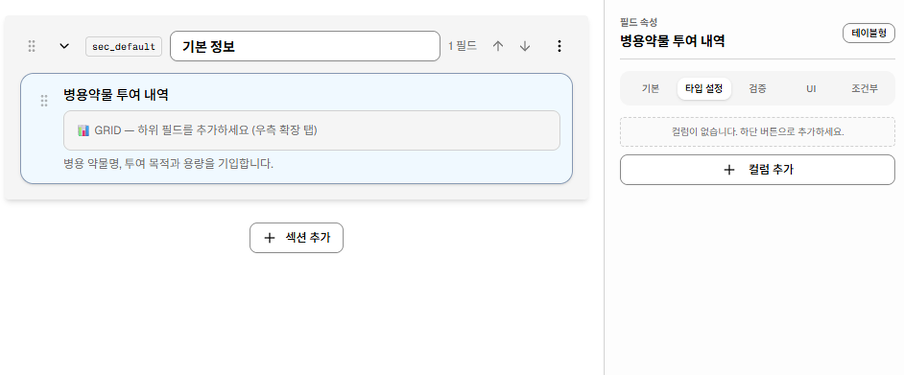
[+ 컬럼 추가] — 첫 컬럼을 생성합니다. 선택한 뒤의 화면은 3.2 에서 설명합니다.
컬럼이 없으면 “컬럼이 없습니다. 하단 버튼으로 추가하세요.” 안내가 표시됩니다.
같은 상태가 캔버스에도 나타납니다 — “GRID — 하위 필드를 추가하세요 (우측 확장 탭)”. 표가 아직 그려지지 않습니다.
타입 배지 「테이블형」 — 설정 중인 필드의 타입입니다.
속성 탭 — 현재 타입 설정 탭입니다.
유의사항
필수 확인 데이터 손상 · 폼 완료 불가
- • ⛔ 컬럼을 만들기 전에는 저장할 값이 없습니다. 이 상태로 발행하면 기록자는 아무것도 입력할 수 없는 안내문만 보게 됩니다. 1.1
오해하기 쉬운 동작
- • 기본값(defaultValue) 항목이 없습니다. 표는 값이 여러 건이라 미리 채워 둘 수단이 제공되지 않습니다 — 단일 행 텍스트 · 숫자 등과 다른 점입니다. 7.2
- • 자동 계산(calculation) 항목도 없습니다. 표 전체를 하나의 수치로 산출하는 것은 성립하지 않습니다. 합계가 필요하면 별도의 숫자 필드를 두십시오. 7.2
- • 최소 · 최대 행 수를 지정하는 항목은 없습니다. 행 수를 제한해야 한다면 도움말로 안내하고 SDV 단계에서 확인하십시오. 2.1 · 2.3
3.2컬럼 추가
개요
컬럼을 하나 추가하면 그 순간 캔버스에 표가 나타납니다. 컬럼 하나가 표의 열 하나이고, 각 컬럼은 자기 이름 · 저장 키 · 입력 방식을 따로 가집니다. 즉 컬럼 하나하나가 작은 필드라고 생각하면 됩니다.
화면 설명
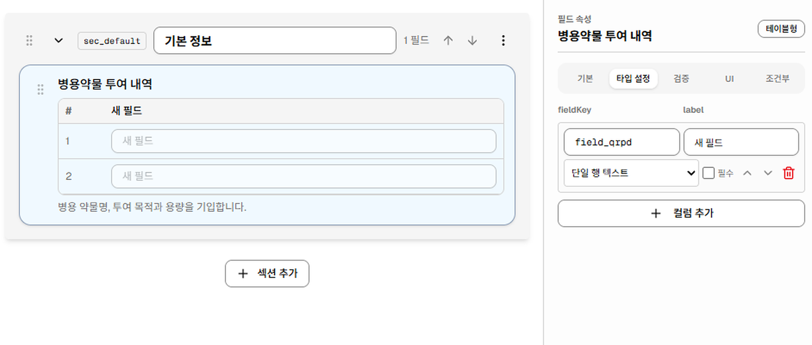
[+ 컬럼 추가] — 컬럼을 하나 더 생성합니다. 선택한 수만큼 열이 늘어납니다.
캔버스에 표가 그려집니다. ⚠ 행이 2개 보이는 것은 미리보기용 예시입니다 — 실제 입력 화면은 1행에서 시작하고 기록자가 [행 추가] 로 늘립니다. 1.1
fieldKey — 그 컬럼의 값이 저장되는 키입니다. field_qrpd 처럼 자동으로 부여되며 표 안에서만 쓰입니다.
label — 컬럼 이름입니다. 처음에는 새 필드 입니다.
표의 머리글로 표시됩니다. 입력 화면에서는 셀 안의 안내 문구로도 같은 값이 쓰입니다. 5.4
타입 — 그 컬럼의 입력 방식입니다. 처음에는 단일 행 텍스트 입니다. 9종에서 고를 수 있습니다 — 단일 행 텍스트 · 숫자 · 날짜 · 날짜+시간 · 참/거짓 · 단일 선택 · 다중 선택 · 전화번호 · 이메일.
필수 — 그 컬럼을 반드시 채워야 하는지 정합니다. 2.2 · 3.3
순서 이동(∧ ∨) 과 삭제 — 컬럼의 좌우 순서를 바꾸거나 제거합니다.
유의사항
필수 확인 데이터 손상 · 폼 완료 불가
- • ⛔ 캔버스의 2행을 행 수 설정으로 오해하지 마십시오. 저작 화면의 표는 모양을 보여 주는 예시일 뿐이고, 행 수는 기록자가 정합니다. 1.1
- • ⛔ 다중 행 텍스트 · 파일 업로드 · 주소 · 척도는 컬럼이 될 수 없습니다. 한 칸에 담기지 않는 타입이라 목록에서 제외되어 있습니다 — 그런 항목이 필요하면 표 밖에 별도 필드로 두십시오. 1.1
오해하기 쉬운 동작
- • 컬럼 fieldKey 는 표 안에서만 유효합니다. 다른 필드의 검증 규칙4.3이나 조건부 표시6장에서 컬럼을 직접 참조할 수 없습니다. 7.2
참고
- • 컬럼 순서가 곧 표의 열 순서입니다. 기록자가 읽는 순서대로 배치하십시오 — 나중에 ∧ ∨ 로 바꿀 수 있습니다.
3.3컬럼 설정 — 표 완성
개요
컬럼마다 저장 키 · 이름 · 입력 방식 · 필수 여부 네 가지를 정합니다. 캡처는 약물명 · 투여 목적 · 1회 투여량 세 컬럼으로 「병용약물 투여 내역」 표를 완성한 상태입니다. 약물명과 1회 투여량만 필수이고 투여 목적은 선택입니다.
화면 설명
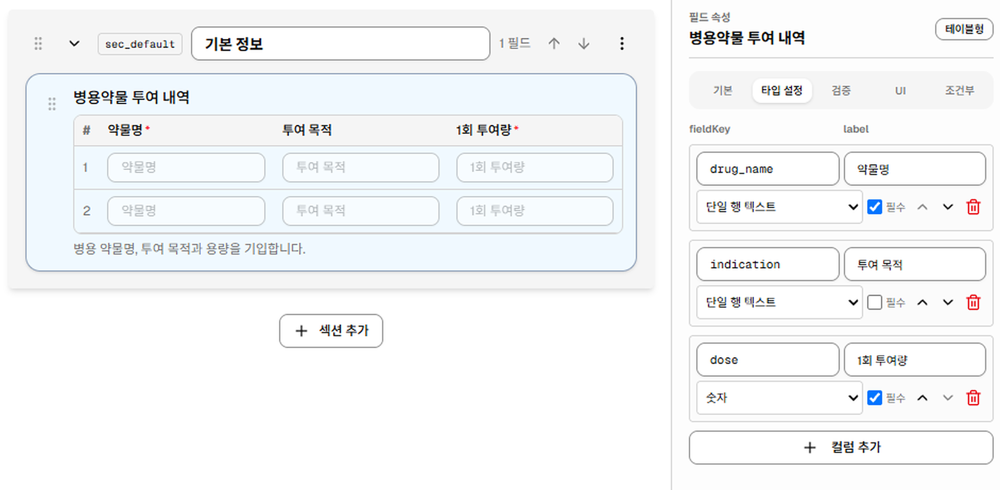
* 가 붙는다fieldKey — 자동 부여된 키를 drug_name 처럼 뜻이 드러나는 이름으로 바꾸면 추출 자료를 읽기 쉽습니다.
label — 컬럼 이름입니다. 캡처는 약물명 입니다.
표의 머리글이 그 이름으로 바뀝니다.
타입 — 캡처의 세 컬럼은 단일 행 텍스트 · 단일 행 텍스트 · 숫자 입니다. 1회 투여량은 수치 비교와 집계를 해야 하므로 숫자로 두었습니다.
필수 — 캡처는 약물명과 1회 투여량만 선택했습니다.
필수로 지정한 컬럼의 머리글 옆에 빨간 * 가 붙습니다. 투여 목적에는 붙지 않았습니다.
둘째 컬럼 — indication / 투여 목적 / 단일 행 텍스트 / 필수 아님.
셋째 컬럼 — dose / 1회 투여량 / 숫자 / 필수.
[+ 컬럼 추가] — 컬럼을 더 늘립니다.
# 열은 행 번호입니다. 시스템이 자동으로 붙이며 저작 대상이 아닙니다.
유의사항
필수 확인 데이터 손상 · 폼 완료 불가
- • ⛔ 컬럼 필수는 표 전체 필수보다 강하게 작동합니다. 필수 컬럼이 하나라도 있으면 기본 탭의 「필수 입력」을 꺼 두어도 그 표는 완료 집계 대상이 되고, 행마다 그 칸이 채워졌는지까지 검사합니다. 2.2
- • ⛔ fieldKey 는 발행 전에 확정하십시오. 저장한 뒤에 바꾸면 이미 입력된 그 열의 값만 연결이 끊어집니다 — 표는 남고 한 열만 비는 형태라 알아차리기 어렵습니다. 2.1
- • 수치는 반드시 숫자 타입으로 두십시오. 단일 행 텍스트로 받으면
500mg처럼 단위가 섞여 들어와 집계도 비교도 할 수 없습니다. 단위는 컬럼 이름에 넣으십시오(예:1회 투여량(mg)).
오해하기 쉬운 동작
- • 선택형 컬럼을 쓰면 표기가 통일됩니다. 투여 목적처럼 보기가 정해진 항목은 단일 선택으로 두면 같은 뜻을 다르게 적는 일이 줄어듭니다. 3.2
검증 탭 — 저장 전 값 검사
- 4.1검증 규칙이 없는 상태
- 4.2규칙 추가
- 4.3규칙 작성 완료 — 다른 필드와 비교
4.1검증 규칙이 없는 상태
개요
저장하기 전에 값이 조건에 맞는지 검사하는 규칙을 모아 두는 탭입니다. 테이블형에서 이 탭은 쓸 수 있는 범위가 매우 좁습니다 — 표의 값은 행이 여러 건인 묶음이라 길이·범위 같은 검사가 성립하지 않기 때문입니다. 셀 하나하나를 검사하는 규칙은 이 탭에 없습니다. 4.2
화면 설명
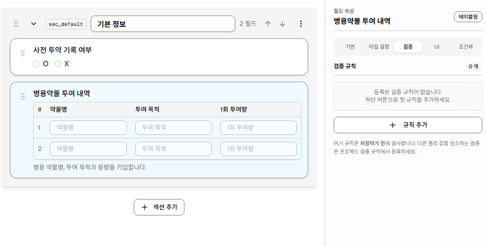
[+ 규칙 추가] — 첫 규칙을 생성합니다. 선택한 뒤의 화면은 4.2 에서 설명합니다.
검증 규칙 영역과 등록된 규칙 수입니다. 처음에는 0 개 입니다.
규칙이 없으면 “등록된 검증 규칙이 없습니다. 하단 버튼으로 첫 규칙을 추가하세요.” 안내가 표시됩니다.
하단 안내 — “여기 규칙은 저장하기 전에 검사합니다. 다른 폼의 값을 참조하는 검증은 프로젝트 검증 규칙에서 등록하세요.”
유의사항
필수 확인 데이터 손상 · 폼 완료 불가
- • ⛔ 컬럼별 검사는 이 탭에서 만들 수 없습니다. 「1회 투여량은 0보다 커야 한다」 같은 규칙을 걸 자리가 없습니다 — 이 탭의 규칙은 표 전체를 하나의 값으로 보기 때문입니다. 컬럼에서 통제할 수 있는 것은 타입과 필수뿐입니다. 3.3
- • ⛔ 행끼리 비교하는 검사도 없습니다. 같은 약물이 두 행에 중복 입력되어도 시스템은 걸러 내지 못합니다 — SDV 단계에서 사람이 확인해야 합니다. 2.3
- • ⛔ 다른 폼의 값을 참조하는 검증은 여기서 만들 수 없습니다. 그런 규칙은 「프로젝트 검증 규칙」 화면에서 등록하십시오 — 다만 그 화면에서도 테이블형 필드는 참조 대상으로 고를 수 없습니다. 7.2
오해하기 쉬운 동작
- • 캡처에는 필드가 둘입니다. 「사전 투약 기록 여부」(단일 선택) 와 「병용약물 투여 내역」 — 앞 필드의 답에 따라 표를 받을지가 갈리는 관계라, 4.3 에서 두 필드를 묶는 규칙을 다룹니다.
4.2규칙 추가
개요
4.1 의 [+ 규칙 추가] 를 선택하면 규칙 1 블록이 생성됩니다. 처음에는 「값 범위」 가 잡혀 있는데, 표의 값은 숫자가 아니라 행들의 묶음이라 크기 비교가 성립하지 않습니다. 「다른 필드와 비교」 로 바꾸십시오 — 표에서 쓸 수 있는 유일한 종류입니다. 4.3
화면 설명
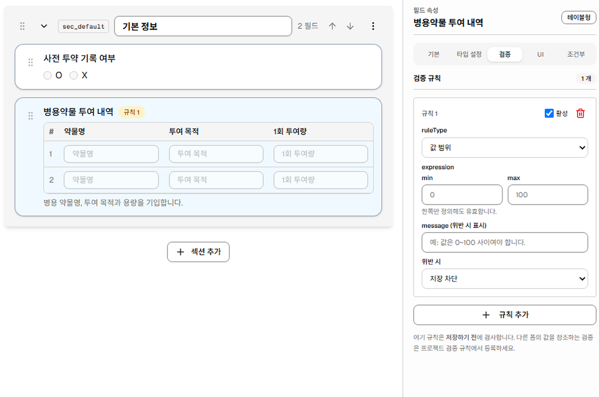
[+ 규칙 추가] — 규칙을 하나 더 생성합니다. (4.1 에서 선택한 것과 같은 버튼입니다.)
캔버스 표 제목 옆에 「규칙 1」 배지가 표시됩니다.
규칙 수가 1 개 로 변경됩니다.
활성 체크박스와 삭제 아이콘 — 규칙을 지우지 않고 잠시 중단할 수 있습니다.
ruleType — 규칙의 종류입니다. 생성 직후에는 「값 범위」 이므로 반드시 「다른 필드와 비교」 로 변경하십시오.
min — 값 범위를 골랐을 때 나타나는 하한 칸입니다.
max — 같은 조건에서 나타나는 상한 칸입니다.
message (위반 시 표시) — 규칙을 위반했을 때 사용자에게 표시할 문구입니다.
위반 시 — 저장 차단 또는 경고 중에서 선택합니다. (ruleType 에 따라 고를 수 없게 되기도 합니다 — 4.3)
흐린 글씨 0 · 100 과 “한쪽만 정의해도 유효합니다.” 는 값 범위에 대한 안내이며 설정된 값이 아닙니다.
유의사항
필수 확인 데이터 손상 · 폼 완료 불가
- • ⛔ 「값 범위」 로 행 수를 제한할 수 없습니다. min · max 는 행 수가 아니라 값의 크기를 보는 칸이고, 표의 값은 숫자가 아니라 아무 일도 일어나지 않습니다 — 오류도 내지 않으므로 규칙을 걸었다고 믿은 채 넘어가게 됩니다.
- • ⛔ 「형식 (정규식)」 을 표에 걸지 마십시오 — 저장이 끝까지 막힙니다. 정규식은 행 묶음 전체를 고정된 내부 문자열로 바꾼 뒤 검사하므로, 어떤 식을 걸어도 행을 하나라도 넣는 순간 위반이 되어 기록자가 폼을 저장할 방법이 없어집니다.
- • ⛔ 「소수 자릿수」 도 동작하지 않습니다. 1회 투여량의 소수점을 제한하고 싶어도 이 탭에서는 컬럼에 닿을 수 없습니다. 4.1
- • message 를 공란으로 두면 사용자는 차단된 이유를 알 수 없습니다. 반드시 입력하십시오.
4.3규칙 작성 완료 — 다른 필드와 비교
개요
ruleType 을 다른 필드와 비교 로 바꾸면 같은 폼의 다른 필드 값과 견주어 검사합니다. “사전 투약 기록이 있다고 한 경우에만 표를 받는다” 처럼 앞 질문의 답에 따라 표를 받을지가 갈리는 관계를 표현할 수 있으며, 표에서 제대로 동작하는 유일한 규칙입니다. 비교 대상은 반드시 표가 아닌 다른 필드여야 합니다 — 아래 유의사항을 읽으십시오.
화면 설명
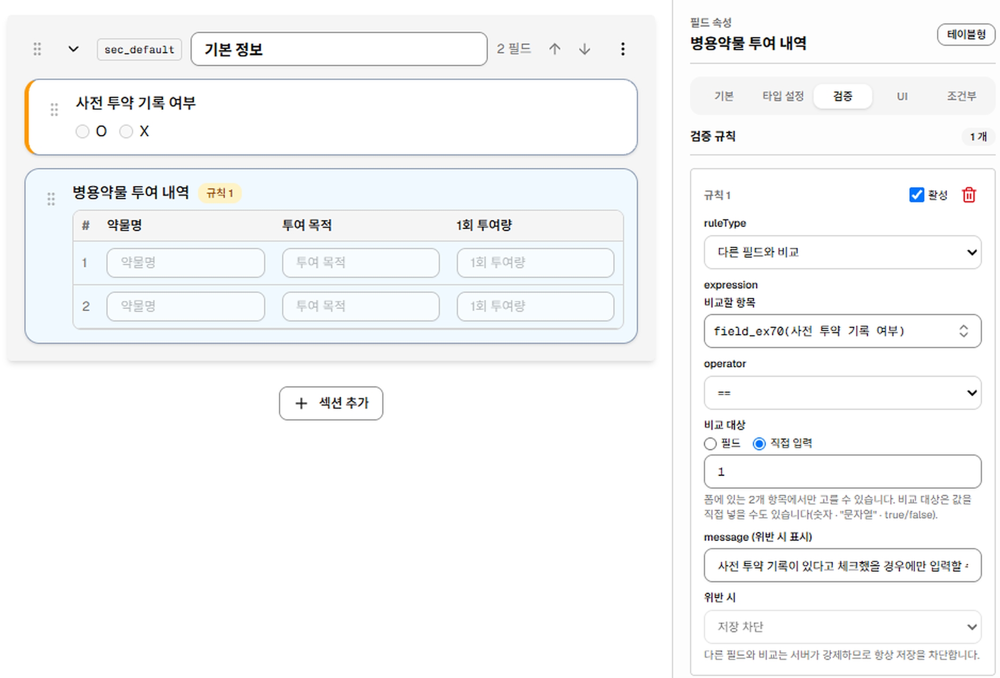
1 일 때만 저장되도록 설정한 상태ruleType = 다른 필드와 비교 — 선택하면 아래 칸이 비교용으로 바뀝니다.
비교할 항목 — 같은 폼의 다른 필드를 선택합니다. 캡처는 field_ex70(사전 투약 기록 여부) 로, 표 앞에 놓인 단일 선택 필드입니다. ⚠ 여기에서 표 자신을 고르면 안 됩니다.
operator — 비교 방법입니다. 캡처는 ==(같음) 입니다.
비교 대상 — 필드 와 직접 입력 중에서 선택합니다. 캡처는 직접 입력으로 1 을 넣었습니다 — 「사전 투약 기록 여부」 의 저장값입니다.
message (위반 시 표시) — 캡처는 사전 투약 기록이 있다고 체크했을 경우에만 입력할 수 있습니다. 입니다.
위반 시 — 회색으로 비활성입니다. 화면 안내와 같이 “다른 필드와 비교는 서버가 강제하므로 항상 저장을 차단합니다.” — 이 규칙에서는 경고를 고를 수 없고 저장 차단으로 고정됩니다.
화면 안내 — “폼에 있는 2개 항목에서만 고를 수 있습니다. 비교 대상은 값을 직접 넣을 수도 있습니다(숫자 · "문자열" · true/false).” 이 목록에는 표 자신도 들어 있으므로 고를 때 주의하십시오.
유의사항
필수 확인 데이터 손상 · 폼 완료 불가
- • ⛔ 비교할 항목으로 표 자신을 고르면 저장이 영구 차단됩니다. 표의 값은 행들의 묶음이라
1과 결코 같아질 수 없어, 행을 하나라도 넣는 순간 위반이 됩니다. 입력 화면은 처음부터 행 1건으로 시작하므로 기록자는 손도 대기 전에 막힙니다. 3.2 - • ⛔ 비교 대상에는 화면 문구가 아니라 저장값을 넣습니다. 「사전 투약 기록 여부」 는 화면에
O·X로 보이므로 저장값이 정말1인지 그 필드의 선택지 목록에서 먼저 확인하십시오 — 다르면 체크해도 저장이 막힙니다. - • 같은 관계를 조건부 표시6.2로도 만들 수 있습니다. 둘 다 걸면 묻지도 않으면서 저장도 막는 중복이 되므로 한쪽만 사용하십시오 — 표에서는 조건부 표시 쪽을 권합니다. 6.1
오해하기 쉬운 동작
- • 6.2 캡처의 참조 키와 문자열이 다릅니다. 두 화면을 다른 시점에 찍어 자동 부여된 키(
field_ex70·field_8y7i)만 달라진 것이며, 가리키는 항목은 둘 다 「사전 투약 기록 여부」 입니다. 2.1
UI 탭 — 화면 배치와 안내 문구
- 5.1UI 탭 전체 구성
- 5.2레이아웃 너비
- 5.3읽기 전용 · 숨김
- 5.4placeholder · helpText
5.1전체 구성
개요
값 자체가 아니라 화면에 어떻게 배치하고 어떻게 안내할지를 정하는 탭입니다. 이 탭의 설정은 저장되는 데이터 자체를 변경하지 않습니다. 테이블형에서는 레이아웃 너비가 특히 중요합니다 — 표는 가로로 넓어서 폭을 줄이면 가장 먼저 무너집니다. 5.2
화면 설명
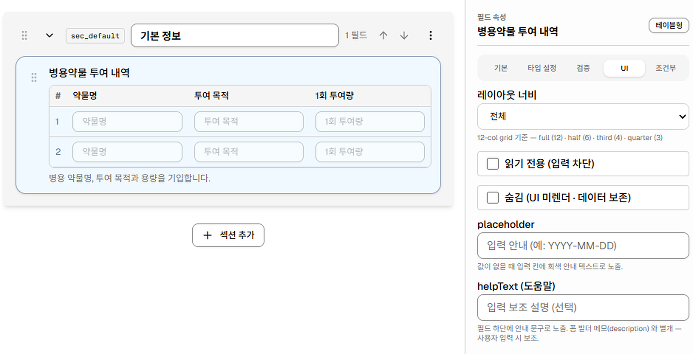
레이아웃 너비 — 폼 한 줄에서 이 표가 차지할 폭입니다. 5.2
읽기 전용 (입력 차단) — 보여 주되 바꾸지 못하게 합니다. 행 추가 · 행 삭제 버튼도 함께 사라집니다. 5.3
숨김 (UI 미렌더 · 데이터 보존) — 화면에서 감춥니다. 표 전체가 사라집니다. 5.3
placeholder — 테이블형에서는 적용되지 않습니다. 셀의 안내 문구는 컬럼 이름이 그대로 쓰이므로 여기에서 바꿀 수 없습니다. 5.4
helpText (도움말) — 표 아래에 표시할 안내 문구입니다. 이쪽은 정상 동작합니다. 5.4
타입 배지 「테이블형」
유의사항
필수 확인 데이터 손상 · 폼 완료 불가
- • ⛔ placeholder 에 입력해도 화면이 바뀌지 않습니다. 셀에 보이는 “약물명” · “투여 목적” · “1회 투여량” 은 컬럼 이름입니다 — 바꾸려면 타입 설정 탭에서 컬럼 label 을 고치십시오. 3.3 · 5.4
- • ⛔ 숨김은 저장된 행을 지우지 않습니다. 화면에서만 감춰지고 값은 그대로 남아 추출과 감사 추적에 포함됩니다. 5.3
오해하기 쉬운 동작
- • 이 탭의 설정은 저장된 값을 바꾸지 않습니다. 배치와 안내만 달라집니다.
참고
- • 읽기 전용과 숨김을 함께 사용하지 마십시오. 숨김이 우선 적용되어 읽기 전용 설정은 효과가 없습니다. 5.3
5.2레이아웃 너비
개요
폼 한 줄에서 이 표가 차지할 폭을 정합니다. 테이블형은 정해진 폭을 컬럼 수만큼 다시 나눠 쓰므로, 폭을 줄이면 다른 어떤 타입보다 빠르게 읽을 수 없게 됩니다.
화면 설명
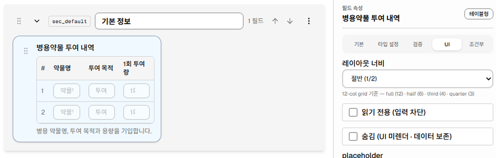
레이아웃 너비 — 전체 · 절반 (1/2) · 1/3 · 1/4 중에서 선택합니다.
표가 절반 폭으로 줄면서 머리글 「1회 투여량」 이 두 줄로 꺾이고 셀 안내 문구가 약물! · 투여 처럼 잘려 무슨 칸인지 알 수 없게 되었습니다. 컬럼이 셋뿐인데도 이렇습니다.
12-col grid 기준 — 화면 안내와 같이 “full (12) · half (6) · third (4) · quarter (3)” 입니다. 표는 이 폭을 다시 컬럼 수로 나눠 쓰므로 체감 폭이 훨씬 좁습니다.
유의사항
필수 확인 데이터 손상 · 폼 완료 불가
- • ⛔ 테이블형은 반드시 전체 폭으로 두십시오. 절반에서 이미 머리글이 꺾이고 셀 문구가 잘립니다 — 1/3 · 1/4 는 표로 쓸 수 없는 수준이 됩니다.
- • ⛔ 컬럼이 늘수록 더 빨리 무너집니다. 컬럼을 5개 이상 둘 계획이라면 전체 폭에서도 좁아질 수 있으니, 정말 필요한 열만 두십시오. 3.3
오해하기 쉬운 동작
- • 잘린 것은 안내 문구일 뿐 칸의 기능은 그대로입니다. 입력도 저장도 정상 동작하며, 좁아 보일 뿐입니다 — 그래서 더 알아차리기 어렵습니다.
참고
- • 지정하지 않으면 전체 폭이 적용됩니다.
5.3읽기 전용 · 숨김
개요
표를 보여 주되 바꾸지 못하게 하거나, 화면에서 감추되 값은 보존하는 설정입니다. 둘 다 저장된 행을 삭제하지 않으며, 표 전체에 적용됩니다 — 특정 컬럼만 잠그거나 감추는 설정은 없습니다.
화면 설명
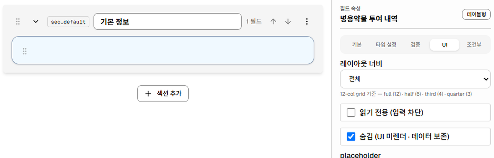
읽기 전용 (입력 차단) — 선택하면 표가 표시되지만 기록자가 고칠 수 없습니다. [행 추가] 버튼과 행 삭제 아이콘도 함께 사라집니다.
숨김 (UI 미렌더 · 데이터 보존) — 선택하면 입력 화면에서 이 표가 표시되지 않습니다.
캔버스 카드가 빈 테두리만 남습니다. 제목도 표도 모두 표시되지 않습니다.
레이아웃 너비 — 5.2 에서 설정한 값입니다.
유의사항
필수 확인 데이터 손상 · 폼 완료 불가
- • ⛔ 잘못 들어간 행을 숨김으로 가리지 마십시오. 값은 그대로 남아 추출과 감사 추적에 포함됩니다 — 지워야 할 기록이라면 감추는 것이 아니라 그 행을 삭제해야 합니다. 4.3
- • ⛔ 읽기 전용으로 두면 기록자가 행을 추가할 수 없습니다. 다른 타입에서는 “보기만 가능” 정도의 의미지만, 표에서는 기록 자체가 불가능해집니다 — 다른 곳에서 가져온 자료를 보여 줄 때만 사용하십시오.
오해하기 쉬운 동작
- • 조건에 따라 감추려면 조건부 표시를 사용하십시오. 이 탭의 숨김은 언제나 감추는 설정입니다. 6장
참고
- • 숨김과 읽기 전용을 함께 선택하면 숨김이 우선 적용됩니다.
5.4placeholder · helpText
개요
입력란 안과 아래에 들어갈 안내 문구를 정합니다. 테이블형에서는 두 항목의 운명이 갈립니다 — helpText 는 정상 동작하지만 placeholder 는 적용되지 않습니다. 캡처가 그 증거입니다.
화면 설명
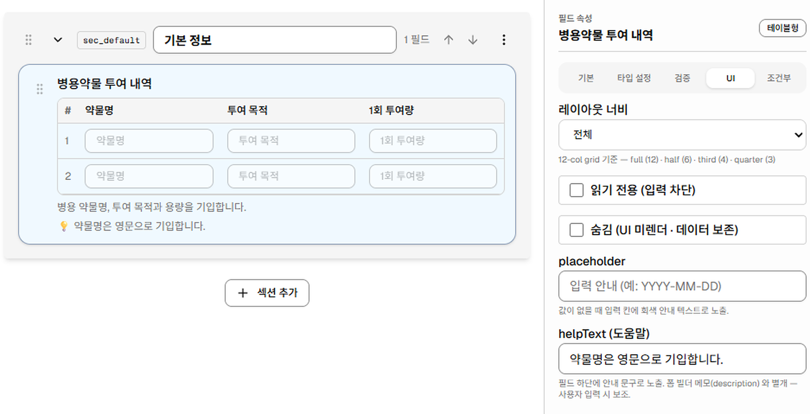
placeholder — 값이 없을 때 입력란에 표시할 흐린 글씨입니다. 캡처에서는 공란이고, 안내 문구 “입력 안내 (예: YYYY-MM-DD)” 만 보입니다.
그런데도 표의 셀에는 “약물명” · “투여 목적” · “1회 투여량” 이 이미 표시되어 있습니다. 이 문구는 placeholder 가 아니라 컬럼 이름(label)이 그대로 쓰인 것이며, 바꾸려면 타입 설정 탭에서 컬럼 label 을 고쳐야 합니다. 3.3
helpText (도움말) — 표 아래에 표시할 안내 문구입니다. 캡처는 “약물명은 영문으로 기입합니다.” 입니다.
표 아래에 💡 아이콘과 함께 표시됩니다. 이쪽은 정상 동작합니다.
description (도움말) — 2.1 에서 입력한 문구입니다. helpText 와 다른 항목이며 아이콘 없이 윗줄에 표시됩니다.
유의사항
필수 확인 데이터 손상 · 폼 완료 불가
- • ⛔ placeholder 에 적은 문구는 어디에도 표시되지 않습니다. 셀의 안내는 컬럼 이름이라 이 칸으로는 바꿀 수 없습니다 — 여기에 적어 두면 설정했다고 믿은 안내가 기록자에게 닿지 않습니다. 5.1
- • 컬럼별 안내는 컬럼 이름에 녹여 넣으십시오. 단위나 형식이 중요하면
1회 투여량(mg)처럼 이름 자체에 적는 것이 표에서 쓸 수 있는 유일한 방법입니다. 3.3
오해하기 쉬운 동작
- • 표 전체에 대한 안내는 helpText 에 적으십시오. 캡처처럼 “약물명은 영문으로 기입합니다.” 라고 적으면 표기 흔들림을 줄일 수 있습니다 — 검증으로는 강제할 수 없으므로4.1 · 4.2 이 문구가 사실상 유일한 통제 수단입니다.
- • description 과 helpText 는 함께 표시됩니다. 둘 다 입력하면 두 줄이 되므로 같은 내용을 두 번 적지 마십시오. 2.1
조건부 탭 — 다른 값에 따라 표시하기
- 6.1조건부 표시 활성
- 6.2조건 설정
6.1조건부 표시 활성
개요
다른 필드의 값에 따라 이 표를 표시하거나 감추는 기능입니다. 테이블형에 특히 잘 맞는 기능입니다 — 표는 “해당 없음” 을 표시할 칸이 없기 때문에2.1, 앞 질문의 답으로 아예 묻지 않는 것이 가장 깔끔한 해결입니다.
화면 설명
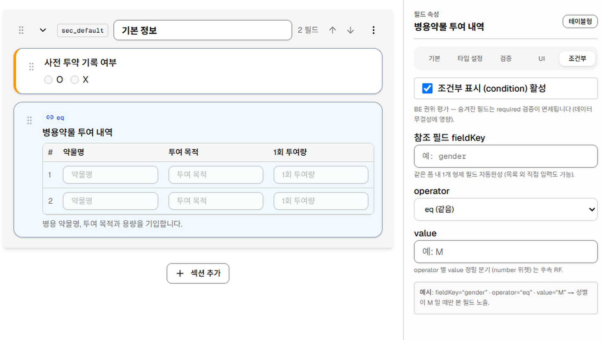
조건부 표시 (condition) 활성 — 선택하면 아래 조건 설정이 표시됩니다.
캔버스 표 위에 🔗 eq 배지가 표시되어 조건이 적용되었음을 알립니다.
참조 필드 fieldKey — 조건의 기준이 되는 같은 폼 안의 다른 필드입니다. 같은 폼의 형제 필드가 자동완성되며, 목록에 없는 값은 직접 입력할 수도 있습니다.
operator — 비교 방법입니다. 기본값은 eq (같음) 입니다.
value — 비교할 값입니다. 참조 필드의 저장값을 입력합니다. 6.2
⚠ 화면 안내 — “숨겨진 필드는 required 검증이 면제됩니다 (데이터 무결성에 영향).” 조건 판정은 시스템이 수행합니다.
하단 예시 — fieldKey="gender" · operator="eq" · value="M" → 성별이 M 일 때만 본 필드 노출.
유의사항
필수 확인 데이터 손상 · 폼 완료 불가
- • ⛔ 조건을 설정하면 필수 검증이 면제됩니다. 조건이 맞지 않아 숨겨진 동안에는 표가 필수여도, 또 필수 컬럼이 있어도 비어 있는 상태로 폼이 완료됩니다. 2.2
- • ⛔ 이미 행을 입력한 뒤에 조건이 거짓이 되면 표가 화면에서 사라집니다. 행은 그대로 남으므로, 앞 질문의 답을 나중에 바꾼 경우 남아 있는 행을 따로 지워야 합니다. 5.3
오해하기 쉬운 동작
- • 표에는 “없음” 을 적을 칸이 없습니다. 앞에 예/아니오 질문을 두고 이 표를 조건으로 묶으면, 해당 없는 피험자에게는 표가 보이지 않아 빈 표와 미기재를 구별할 수 있습니다. 2.1 · 2.2
참고
- • 조건을 활성화하고 참조 필드를 공란으로 두면 조건이 성립하지 않습니다. 반드시 ②~④를 모두 입력하십시오. 6.2
6.2조건 설정
개요
6.1 에서 활성화한 조건을 끝까지 입력한 상태입니다. 이 설정이면 「사전 투약 기록 여부」 필드의 값이 1 일 때만 표가 화면에 표시됩니다. 4.3 의 검증 규칙과 같은 관계를 다른 방법으로 표현한 것입니다 — 저장을 막는 대신 아예 묻지 않는 쪽입니다. 두 화면을 나란히 비교해 보십시오.
화면 설명
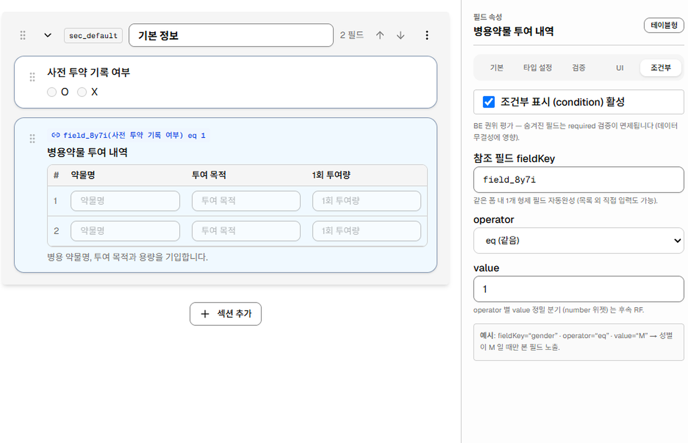
사전 투약 기록 여부 가 1 일 때만 표시되도록 설정한 상태참조 필드 fieldKey = field_8y7i — 같은 폼의 「사전 투약 기록 여부」 필드를 가리킵니다. 검증 규칙4.3과 같은 필드를 가리키지만, 캡처를 찍은 시점이 달라 자동 부여된 키 문자열만 다릅니다. 4.3
①~③을 모두 입력한 결과 — 캔버스 배지가 🔗 field_8y7i(사전 투약 기록 여부) eq 1 로 구체화됩니다.
operator = eq (같음)
value = 1 — 화면에 보이는 O 가 아니라 그 선택지의 저장값을 입력합니다.
⚠ 화면 안내 — “숨겨진 필드는 required 검증이 면제됩니다 (데이터 무결성에 영향).”
하단 예시 — fieldKey="gender" · operator="eq" · value="M" → 성별이 M 일 때만 본 필드 노출.
유의사항
필수 확인 데이터 손상 · 폼 완료 불가
- • ⛔ value 에는 화면 문구가 아니라 저장값을 입력합니다. 「사전 투약 기록 여부」 가 화면에
O·X로 보인다고O라고 적으면 조건이 성립하지 않아 표가 끝까지 표시되지 않습니다. 참조할 필드의 선택지 목록에서 저장값을 먼저 확인하십시오. - • ⛔ 참조 필드의 저장값을 바꾸면 조건이 조용히 깨집니다. 저장값을
1에서Y로 바꾸면 이 조건은 오류 없이 그냥 성립하지 않게 됩니다 — 그래서 발행 후 저장값 변경이 위험합니다. - • 같은 관계를 검증 규칙4.3으로도 만들 수 있습니다. 둘 다 걸면 묻지도 않으면서 저장도 막는 중복이 되므로 한쪽만 사용하십시오 — 표에서는 조건부 표시 쪽을 권합니다. 6.1
오해하기 쉬운 동작
- • 설정한 뒤 미리보기로 확인하십시오. 기준 값을 바꿔 가며 표가 실제로 나타나고 사라지는지 확인해야 합니다.
부록
- 7.1탭별 설정 항목 한눈에 보기
- 7.2반드시 기억할 것 · 다루지 않은 것
7.1탭별 설정 항목 한눈에 보기
탭별 설정 항목
| 탭 | 항목 | 무엇을 정하는가 | 본문 |
|---|---|---|---|
| 기본 | fieldKey | 표 전체가 저장되는 하나의 키 (저장 후 변경 금지) | 2.1 |
| label (표시명) | 표 위에 표시되는 제목 — 컬럼 이름과는 다른 층 | 2.1 | |
| description (도움말) | 표 아래 보조 설명 — “한 건도 없을 때” 를 적을 것 | 2.1 | |
| 필수 입력 | 행이 최소 1건 있어야 하는지 — ⚠ 컬럼 필수가 더 강하다 | 2.2 | |
| SDV 검증 대상 | CRA 원자료 대조 대상인지 — 빠진 행을 찾는 유일한 단계 | 2.3 | |
| 타입 설정 | 컬럼 fieldKey | 그 열의 저장 키 — 발행 전에 확정할 것 | 3.3 |
| 컬럼 label | 표의 머리글 겸 셀 안내 문구 (placeholder 를 대신한다) | 3.3 · 5.4 | |
| 컬럼 타입 | 그 열의 입력 방식 — 9종 (수치는 반드시 숫자로) | 3.2 · 3.3 | |
| 컬럼 필수 | ⚠ 행마다 그 칸이 채워졌는지 검사된다 | 3.3 | |
| 검증 | ruleType | 「다른 필드와 비교」 만 동작한다 | 4.2 · 4.3 |
| 형식 (정규식) | ⛔ 걸면 저장이 끝까지 막힌다 — 사용 금지 | 4.2 | |
| 값 범위 · 소수 자릿수 | ⛔ 조용히 아무 일도 하지 않는다 — 행 수 제한 아님 | 4.2 | |
| 비교할 항목 | ⛔ 표 자신을 고르면 저장이 영구 차단된다 | 4.3 | |
| UI | 레이아웃 너비 | ⚠ 반드시 전체 — 절반에서 이미 머리글이 꺾인다 | 5.2 |
| 읽기 전용 | 보여 주되 고치지 못하게 — 행 추가 버튼도 사라진다 | 5.3 | |
| 숨김 | 화면 미표시 — 저장된 행은 그대로 남는다 | 5.3 | |
| placeholder · helpText | ⛔ placeholder 는 적용되지 않는다 · helpText 만 동작 | 5.4 | |
| 조건부 | 조건 활성 | 조건부 표시 사용 여부 (필수 검증 면제) | 6.1 |
| 참조 필드 fieldKey | 조건의 기준이 되는 같은 폼의 필드 | 6.2 | |
| operator · value | 비교 방법과 비교할 값 (저장값을 입력) | 6.2 |
필수가 두 층이다 — 어느 쪽이 어떻게 작동하는가
| 설정 | 어디에서 | 무엇을 검사하는가 | 끄면 건너뛸 수 있는가 |
|---|---|---|---|
| 표 전체 필수 | 기본 탭 「필수 입력」 2.2 | 행이 최소 1건 있는지 | 예 — 컬럼 필수가 하나도 없을 때만 |
| 컬럼 필수 | 타입 설정 탭 컬럼 「필수」 3.3 | 행마다 그 칸이 채워졌는지 | 아니오 — 표 전체 필수를 꺼도 표가 집계 대상이 된다 |
7.2반드시 기억할 것 · 다루지 않은 것
반드시 기억할 것
필수 확인 데이터 손상 · 폼 완료 불가
- • 검증 탭의 「비교할 항목」 으로 표 자신을 고르지 마십시오. 목록에 함께 나오지만, 고르면 행을 하나라도 넣는 순간 위반이 되어 저장이 영구 차단됩니다. 4.3
- • 「형식 (정규식)」 도 걸지 마십시오. 같은 이유로 무엇을 입력해도 위반이 됩니다. 4.2
- • 컬럼에 필수가 하나라도 있으면 표 전체 필수를 꺼도 건너뛸 수 없습니다. 게다가 행마다 그 칸이 채워졌는지까지 검사합니다 — 빈 행은 삭제하십시오. 2.2 · 3.3
- • 레이아웃 너비는 전체로 두십시오. 절반에서 이미 머리글이 두 줄로 꺾이고 셀 문구가 잘립니다. 5.2
- • 컬럼을 정의하지 않으면 아무것도 입력할 수 없습니다. 캔버스에 표가 보이지 않으면 그 상태입니다. 1.1 · 3.1
- • placeholder 에 적은 문구는 어디에도 표시되지 않습니다. 셀 안내는 컬럼 이름이므로 컬럼 label 을 고치십시오. 3.3 · 5.4
- • 수치 컬럼은 반드시 숫자 타입으로 두십시오. 텍스트로 받으면 단위가 섞여 집계도 비교도 할 수 없습니다. 3.3
오해하기 쉬운 동작
- • 캔버스의 2행은 미리보기입니다. 실제 입력 화면은 1행에서 시작하고 기록자가 [행 추가] 로 늘립니다. 3.2
- • “해당 없음” 을 적을 칸이 없습니다. 앞에 예/아니오 질문을 두고 조건부 표시로 묶는 것이 표준 해법입니다. 2.1 · 6.1
- • 셀 하나하나를 검사하는 규칙은 없습니다. 컬럼에서 통제할 수 있는 것은 타입과 필수뿐입니다. 4.1
참고
- • 읽기 전용으로 두면 행 추가 버튼이 사라집니다. 표에서는 “보기만 가능” 이 아니라 기록 자체가 불가능해집니다. 5.3
이 문서에서 다루지 않은 것
※ 미측정 선언 허용 — 기본 탭에 항목 자체가 표시되지 않습니다. 표는 값이 여러 건이라 “확인할 수 없음” 을 한 건으로 선언하는 것이 성립하지 않기 때문입니다. 그래서 이 매뉴얼에는 미측정 절이 없습니다. 해당 없는 경우는 조건부 표시로 처리하십시오. 1.1 · 6.1
AE 의미 역할 — 기본 탭에 항목 자체가 표시되지 않습니다. 이상사례 역할은 예/아니오 또는 단일 선택 필드에 지정하는 것이며, 표에는 지정할 수 없습니다. 1.1
최소 · 최대 행 수 — 지정하는 항목이 없습니다. 행 삭제는 마지막 1행이 남으면 더 지울 수 없다는 제약만 있습니다. 행 수 기준이 필요하면 도움말로 안내하고 SDV 에서 확인하십시오. 3.1
기본값 (defaultValue) — 타입 설정 탭에 항목이 없습니다. 표는 값이 여러 건이라 미리 채워 둘 수단이 제공되지 않습니다. 3.1
자동 계산 (calculation) — 타입 설정 탭에 항목이 없습니다. 표 전체를 하나의 수치로 산출하는 것은 성립하지 않습니다. 합계가 필요하면 별도의 숫자 필드를 두십시오. 3.1
컬럼을 참조하는 검증 · 조건 — 컬럼 fieldKey 는 표 안에서만 유효해서 다른 필드의 검증 규칙이나 조건부 표시에서 직접 참조할 수 없습니다. 3.2 · 4.1
프로젝트 검증 규칙에서의 참조 — 다른 폼의 값을 보는 「프로젝트 검증 규칙」 화면에서는 테이블형 필드를 참조 대상으로 고를 수 없습니다. 값이 행 묶음이라 셀 단위 경로를 아직 지원하지 않기 때문입니다. 4.1
컬럼으로 쓸 수 없는 타입 — 다중 행 텍스트 · 파일 업로드 · 주소 · 척도, 그리고 표·그룹 같은 컨테이너 전부. 한 칸에 담기지 않아 목록에서 제외되어 있습니다. 3.2